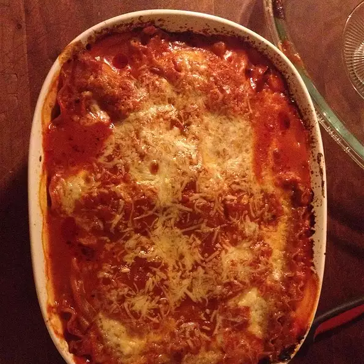

Miracle Lasagna

This is a recipe for a traditional three cheese lasagna with no meat.
There is nothing complicated about this lasagna. In just a little over
an hour you will have a delicious lasagna to eat.
Ingredients
- 1 (26 ounce) jar Prego Traditional Italian sauce
- 6 uncooked lasagna noodles
- 1 (15 ounce) container ricotta cheese
- 2 cups shredded mozzarella cheese
- 1/4 cup grated Parmesan cheese
Steps
- Preheat Oven to 375F
- Prepare a shallow 2-quart baking dish (11x7-inch) by spreading 1 cup
of pasta sauce on the bottom.
- Top with 3 uncooked noodles, ricotta cheese, 1 cup of mozzarella cheese,
Parmesan cheese and 1 cup of pasta sauce in a layer. Top with the remaining
3 uncooked noodles and remaining sauce.
- Cover with almuminum foil and bake for 1 hour
- Take out and uncover. Top with remaining mozzarella cheese
and let stand for 5 minutes.
Home